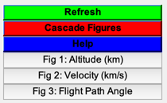
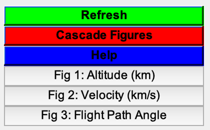

Contents
LSQ launch demo
Use least squares approach to compute launch conditions. In order to achieve orbit, the final states are a vRatio of 1 and a flight path angle of 0. The demo is for Pegasus. The parameters are the initial flight path angle and the size of the third stage.
------------------------------------------------------------------------- See also LSQLaunch, LSQLaunchSim -------------------------------------------------------------------------
%-------------------------------------------------------------------------- % Copyright (c) 2014 Princeton Satellite Systems, Inc. % All rights reserved. %--------------------------------------------------------------------------
Initialization
% LSQ parameters [gamma; scale], where: % gamma: Initial flight path angle % scale: Scale of 3rd stage p0G = [0.94;1]; % Final states to match. [vRatio; gamma] zM = [1;0]; % Diagonal weighting matrix W = [1 0;0 10]; % load launch vehicle data rocket = RocketDatabase( 'Pegasus' ); rocket = ScaleVehicle( rocket, 0.65 ); % remove all non-fueled stages kNF = find(rocket.eS==1); for i=kNF rocket = RemoveStage(rocket,i); end rocket = SetPayloadMass( rocket, 200 ); % RHS data structure d = LaunchRHSData( 2, rocket ); d.coast = [0 0 292.764]; % coast times (sec) d.cDA = [0;0;0]; % drag coefficients % additional launch data d.simFun = @LSQLaunchSim; d.direct = 1; % 2 possible launch methods: direct (1) OR indirect (0) d.h0 = 11.9; % initial altitude (km) d.v0 = 0.242; % initial velocity (km/s)
Calculate
[p0,z] = LSQLaunch( p0G, zM, W, d ); disp('Parameters') disp(p0') disp('Target and Achieved Conditions') disp([zM z])
Norm of perturbation (dp0) Norm of error (zM-z)
0.02403 0.031555
0.010846 0.01635
0.0085602 0.0052068
0.008525 0.012082
0.0058796 0.022304
0.013969 0.016446
0.010702 0.0099904
0.0095167 0.0214
0.016279 0.018966
0.0023626 0.0060052
Parameters
0.92681 1.0315
Target and Achieved Conditions
1 0.99911
0 0.0051308
Simulate and Plot
[~,xS,time] = LSQLaunchSim( p0, d ); Plot2D(xS(1,:),xS(2,:),'Range (km)','Altitude (km)'); Plot2D(time',xS(3,:),'Time (s)','Velocity (km/s)') Plot2D(time',xS(4,:),'Time (s)','Flight Path Angle') Figui %--------------------------------------
 
